|
Basic Lighting
In this tutorial we will go through the basic steps of setting up
lighting in a level. In Max Payne 2 we have a new lighting system which
is called Global Illumination System (also known as GIS). Basically the
new system works better and produces results much faster than the
previous system in Max Payne (2001).
Setting up the lights
First let's simply set up lighting in one single room. Like in the
first Max Payne, lights are emitted by defined polygons on any mesh.
Make a small room first and create a box shaped mesh. Go into F6 mode
and point at one polygon and press L.
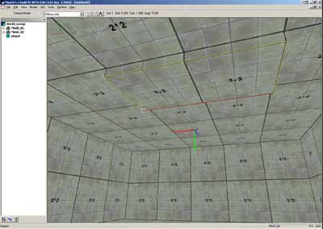
Following dialog box will then open:
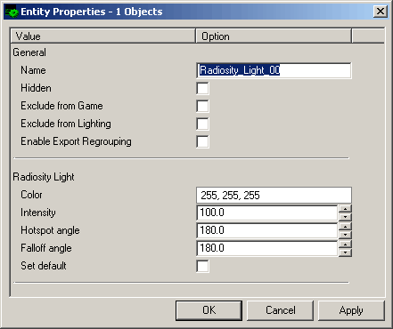
The color defines the color of the light. It's a simple RGB value.
The new lighting system creates a certain amount of emitters on the
surface of the defined lighting polygon. It depends on values defined
elsewhere (more on that later). Every emitter emits light at the same
direction as the normal of the surface. The hotspot and falloff angle
defines the corresponding values of each single light emitter.
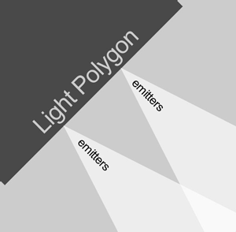
There will be a lot of emitters on the polygon surface, so it's
basically a pretty uniformed light which leaves the polygon.
Leave the values alone and press "OK". Now we'll render the
lights and see how it looks like. Go into the maxed directory and start
the batch file LocalRender.bat. It will start a Global Illumination
Server and a client which automatically connects to it. GIS calculation
always requires a server which will divide the map in cells and the
clients does the actual lighting calculation. As you can see, the server
and client can run on the same machine. If you have other computers, you
can connect them as well on the server. You just need to define a new
address in the top line of config.txt found in the GISClient -directory.
The address is naturally the IP of the server machine.
Check that two command prompts are started. The other one should be
"CalculationTestServer.exe" and the other one "WinCalculationClient".
If the server does not start, go into the GISServer -directory under the
maxed -directory and open the config.txt. Check that the X_SharedDBDir
points to your database-directory. Also make sure that the ShareDir
exists. When the lighting calculation has been completed with your
level, it will be put in the defined ShareDir.
You can see the server status by opening up an internet browser
(works at least in Internet Explorer 6) and typing the address "localhost"
in the address bar.
After you have started the client and the server, go back to maxed.
Choose GIS and "Send Level" from the top menu bar. A
dialogue box opens asking the GIS server IP. Type "localhost"
there and press OK. Now the level is sent to the server for processing.
The server splits the level up in cells, and each cell is sent to a
client. You can monitor it all via the generated webpage.
After the process is done, the level is put into the defined "ShareDir".
You have to load it up again in MaxED. It should automatically switch on
the view with diffuse and lightmaps. You can switch the view type by
pressing 1, 2 or 3 on the numpad (in case it doesn't work, check that
numlock is switched on).
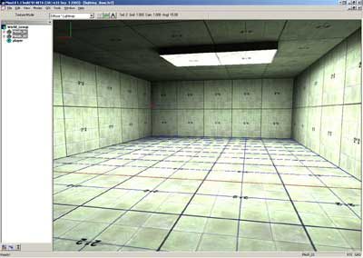
The lighting should look something like this.
We could change the hotspot and falloff values to smaller. With
values 40 for hotspot and 50 to falloff, the light would look like this:
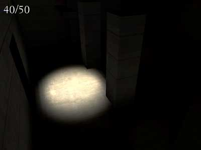
Notice how sharp the light border becomes in comparison. It's also
quite useless without the help of other lights.
Often this kind of sharp edged approach is good for drama or small
lamps, but usually it is more practical to have a smaller hotspot and
larger falloff angle, say 70 and 150 degrees:
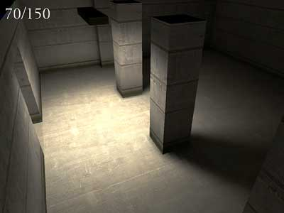
Adjusting Lights
You can emulate a real life spotlight by making a small light source
with a high intensity value. The maximum intensity is 2000. There's a
limit to how small a light is actually useful - under 5x5cm lights are
usually too small for practical use, not only because they emit small
amounts of light (even with high intensities), but also because the
lightmap resolution needed for showing the light coming for a small
source needs to be very high to be able to represent the results without
grave inaccuracies.
Unlike old radiosity, the GI system gets slower the more lights you
have in your level. So it's not smart to set all polygons on a complex
sphere-shaped lamp object to emit light. Rather make a cube around the
lamp, make the six sides of it to emit the light and check the
"Exclude from Game" -flag on at the object properties. Then it
will cast the light, but it's not visible in the game itself.
Apart from aforementioned values (angles, intensity), there are a few
things that affect the end result of your lighting, the first and most
obvious one being the lightmap resolution; basically the higher the
resolution the more accurate shadows and lights you get, but also
slightly slower rendering times. Like textures, lightmaps eats up memory
as well: The more accurate lightmaps you have, the more they eat up
texture memory. You can change the lightmap resolution by going into F6
mode, pointing the polygon and pressing K. A resolution of 4 is
considered a relatively high value. You can change lightmap resolutions
of whole objects in F5 mode as well, by choosing the objects and
pressing shift-K.
You can also choose "solid color" on the lightmap
properties. It will basically "fake" a lightmap. It's useful
for lamp objects which does not emit light itself but uses a dummy light
for the actual lighting. Remember to freeze lightmaps on objects such as
these (lightmap freezing is explained below).
There is a tool for checking whether the lightmaps are too high. You
can access it by pressing F1 and setting the flag "lightmap
density" ON. Then check that you have Lightmap and Diffuse -mode
ON. You can put it on by pressing number 3 on the numpad.
If you want to remove or change properties of a light source, you
need to look it up on the hierarchy window.
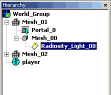
Then right-click it to see the menu selections for the light. You can
find delete and properties from there.
Also, there is an option to smooth lightmaps around several polygons,
to make them look more round. First you have to add a polygroup for the
object. You can do that by looking up the object in the hierarchy tree
and right-clicking it. Then choose "Add Polygroup".
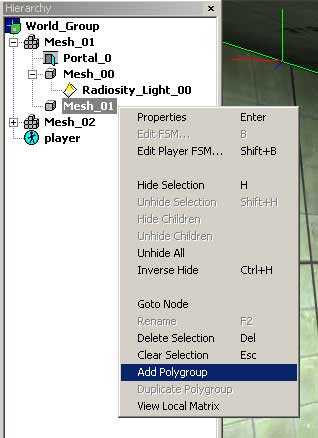
A new child object appears, called Polygroup_00. You can add and
remove polygons from the group by choosing the group in the hierarchy
list and going into F6 -mode. Then shift-click on the polygons on the
object. When a polygon is in the polygroup, it will appear as light
blue. To switch lightmap smoothing on, you have to edit the polygroup
properties by right-clicking the polygroup in the hierarchy list and
choosing "properties".
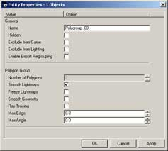
Look up the "Smooth Lightmaps" flag in the middle of the
dialog and check it on.
You also have such options as "Freeze Lightmaps" and
"Ray Tracing". "Freeze Lightmaps" locks the
lightmaps so that a new GIS render does not affect them.
Ray tracing is an enhanced version of the lighting calculation and
will provide more accurate results. It is however slower and is not
recommended for general use. Ray tracing should be used when there are
clear artifacts on lightmaps. This can happen for instance on two
objects right next to each other (like a door and a frame).
Rendering
More important from the quality aspect are the 'Viewport size', 'GIS
MaxEnergyPerShoot' and 'GIS StopAtEnergy' values. The viewport size
determines the quality of the light, MaxEnergyPerShoot the accuracy of
the light and StopAtEnergy corresponds a bit to the old 'rendering
passes' value, meaning it determines how 'far/long' the emitted light
bounces from surfaces. The GIS values are inversed, so the smaller the
numeric value, the higher the rendering quality. You can change these
settings by opening the document preferences (Tools -> Document
preferences or CTRL-P) and looking at the bottom part of the revealed
dialog window.
"Average lightmap borders" filters the edges of lightmaps.
It might look better or worse, it's hard to say. Best way to find out is
to test it. It was not used in Max Payne 2.
Here are some sample shots of different values (Viewport/MaxEnergyPerShoot/StopAtEnergy).
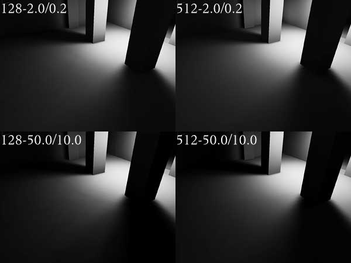
In Max Payne 2, we used generally values 512 - 3.0 / 0.3. In certain
areas it was as small as 512 - 1.0 / 0.1.
There is more 'noise' when using small viewport sizes and the scene
is darker and in a way blurrier when using higher MaxEnergy/StopAt
values. Here's an image to emphasize the differences in lighting:
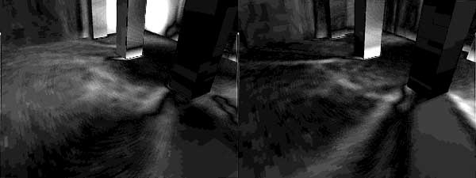
In effect these are exaggerated images showing the difference between
128 and 512 viewports (2.0/0.2 on the left and 50/10 on the right).
Volume Calculation
For character lighting and shadows we have a method called Volume
Calculation. It is based on lightmaps already calculated in the level.
After you have calculated the lightmaps, you can proceed on calculating
the volume lighting. It is done by starting VolumeCalculationServer.exe
in the VOLSERVER -directory under the maxed -directory. After the server
is running, go back to maxed and choose "GIS -> Send Level (vol)".
Then choose "localhost" as the address. It will then send the
level to the volume lighting calculation server; the client will start
automatically when the server receives the file.
If there are problems in running the VolCalc server, check the
config.txt -file found at the VOLSERVER -directory. It should have the
same X_ShareDBDir value as GIS. The resolution defines in meters how
accurate the volume calculation is. We used a value of "1" in
Max Payne 2.
In case there are large areas where there is no character movement,
you can use volume lighting boxes. In case there are one or several
volume lighting boxes in a room, only the volumes inside those boxes
will be calculated. You can place a box like this by going into F3 mode
and pressing N. Then choose Volume_Lighting_Box from the dropdown menu.
You change the box dimensions by opening its properties.
That's the basic information you need for making lighting in Max
Payne 2.
|